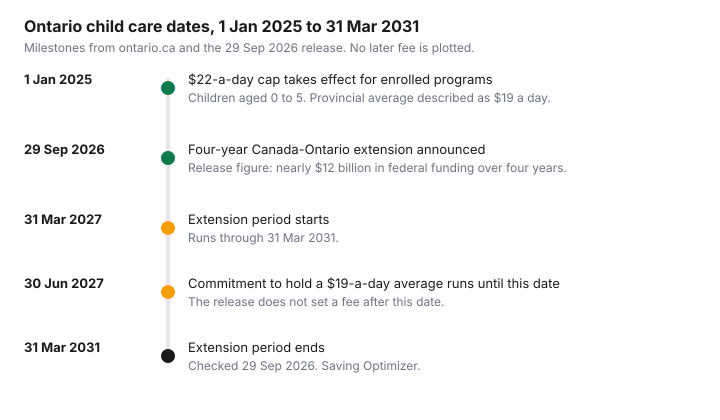

Kids · Canada
Ontario Child Care Fees in 2026: The $22 Cap, the New Federal Extension and What Changes for Your Bill
Ontario parents are holding two numbers at once: a $22-a-day cap and a $19 average, plus a federal-provincial extension announced on 29 September 2026. The cap is a ceiling on eligible fees at enrolled programs. The average is what those fees work out to across the province. Your invoice is a third number, and it only falls under the cap when the program is enrolled. This page walks through the announcement, the ontario.ca fee rules, and the lines to question on the bill. It is education, not a ruling on your centre's invoice.
Key takeaways
- On 29 September 2026, Canada and Ontario announced a four-year extension from 31 March 2027 to 31 March 2031. The release says nearly $12 billion in federal funding over those four years.
- Ontario commits to keeping fees at an average of $19 a day until 30 June 2027. The release does not set a fee after that date.
- Since 1 January 2025, eligible fees at CWELCC-enrolled providers are capped at $22 a day for children aged 0 to 5. ontario.ca also states that average as $19 a day, and that 93 percent of licensed spaces for ages 0 to 5 were in enrolled programs as of June 2026.
- Parents of children under 6 do not apply for the fee reduction. If the provider is not enrolled, fees are not reduced.
- The federal child care expense deduction can still apply to what you pay. Use Form T778 and confirm the claim with the CRA.
What was announced on 29 Sep 2026: the four-year Canada-Ontario extension
The 29 September 2026 release from the governments of Canada and Ontario announces a four-year extension of the Canada–Ontario Canada-wide Early Learning and Child Care Agreement. The extension runs from 31 March 2027 to 31 March 2031. The release says Ontario will receive nearly $12 billion in federal funding over those four years. That figure is the release's wording. It also says this funding is in addition to the $13.8 billion allocated to Ontario under the Canada-wide agreement between 2021–22 and 2026–27.
As part of the extension, Ontario commits to maintain current child care fees at $19 a day on average until 30 June 2027. The release says the two governments will work over the next year to maintain affordable fees and to establish a sustainable path, including negotiations about Ontario's share of the $5.4 billion over two years that the federal government announced in June 2026. It does not publish a daily fee for July 2027 or later. Budget the months you can see on the page, and check ontario.ca before you lock in a number past June 2027.
Employment and Social Development Canada's child care campaign page, checked 29 September 2026, still describes Ontario and Alberta as having signed one-year extensions for 2026–27, and five-year extensions (2026–27 to 2030–31) with 11 other provinces and territories. The same page's news list includes the 29 September Ontario announcement. Read the dated release for the four-year term, and the campaign page for the national picture. The province-by-province status is on the $10-a-day guide.
| What was stated | Date on the page | Source |
|---|---|---|
| Eligible child care fees capped at $22 a day for CWELCC-enrolled providers, for children aged 0 to 5 | In effect 1 January 2025. ontario.ca page updated 25 September 2026. | ontario.ca agreement page, and the 29 September 2026 release |
| Provincial average fee of $19 a day after that cap | Described as the result of the 1 January 2025 cap | ontario.ca and the 29 September 2026 release |
| Four-year extension of the Canada–Ontario agreement | Announced 29 September 2026. Term 31 March 2027 to 31 March 2031. | 29 September 2026 release |
| Commitment to hold fees at an average of $19 a day | Until 30 June 2027 | 29 September 2026 release |
| Parents and guardians of a child under 6 do not apply for the fee reduction | Page updated 25 September 2026 | ontario.ca |
| If the licensed provider is not enrolled, fees are not reduced | Page updated 25 September 2026 | ontario.ca |
| 93 percent of licensed spaces for children aged 0 to 5 are in enrolled programs | As of June 2026 | ontario.ca |
| Nearly $12 billion in federal funding over the four-year extension, in addition to $13.8 billion for 2021–22 to 2026–27 | 29 September 2026 | The release's figures |

The $22-a-day cap and the $19 average: what they mean on an invoice
ontario.ca, updated 25 September 2026, says that as of 1 January 2025 the province capped reduced fees at $22 a day, bringing the provincial average to $19 a day. The 29 September 2026 release says the same thing in its quick facts: as of 1 January 2025, Ontario capped eligible child care fees at a maximum of $22 a day for providers enrolled in the Canada-wide system, bringing the average for such fees down to $19 a day. A centre at $22 and a centre already under $22 can both be inside that average. The cap is the ceiling. It is not a promise that every enrolled invoice prints $19.
The same ontario.ca page gives the earlier steps. As of 1 April 2022, fees were reduced by up to 25 percent. As of 31 December 2022, fees were reduced by up to another 37 percent, which the page says brought the provincial average to $23 a day, described as 50 percent of 2020 fees. The $22 cap is the step after that. The page's own illustrations, which assume 261 weekdays in 2025, show one centre falling from $62 a day to $22, another already at $17.96 a day and staying there because it was under the cap, and a third that had raised its fee before enrolling and then landing at $22. Those are the province's examples, tied to those starting fees. They are not your invoice.
You may be eligible for a reduced fee, the page says, when the licensed provider is enrolled and charges more than $12 a day, and your child is under 6, or turns 6 and stays in a listed age group until 30 June. The amount you save depends on what the provider charges and may vary by age group and region. Put the enrolled base fee on one line of your budget and anything the centre adds on another. A zero-based month is where that line belongs, next to the rest of the household.
Is your centre enrolled? How to check and what to ask
Licensed providers must tell parents and guardians whether the program is enrolled, through the parent handbook. That is the first document to read. If the handbook is silent, ask in writing: is this program enrolled in the Canada-wide system, and for which age groups? Unlicensed home child care, authorized recreation programs, and unlicensed school-board extended day programs are not eligible to participate, the page says. A home provider registered with a licensed agency should ask the agency whether the agency is enrolled.
Enrolment is the provider's agreement with the local service system manager, not an application you file. As of June 2026, ontario.ca says 93 percent of licensed spaces for ages 0 to 5 were in enrolled programs, with 60,000 net new affordable spaces as of that month, against a stated aim of 86,000 net new licensed spaces. A space in the other 7 percent is a full fee. The page also says that, as of 1 January 2025, fee subsidies can no longer support children aged 0 to 5 in non-enrolled programs, except subsidy agreements that existed on 31 December 2024, which may continue until the child ages out or leaves. Subsidy for families who qualify is a separate income test run by the local service system manager, and the page says the amount you pay is reduced by 50 percent for eligible children in enrolled programs. Apply for subsidy with that manager. Do not treat the $22 cap as the subsidy.
| Fee line | What the cap covers, per ontario.ca | What to treat as optional until the centre says otherwise | Question to ask the centre |
|---|---|---|---|
| Daily or monthly child care fee | A cap of $22 a day on child care fees for children aged 0 to 5 in an enrolled program, since 1 January 2025. Fees already under $22 stay under the cap in the province's example. | Any line the handbook does not call the base child care fee. | Is this program enrolled, and is this line the capped fee for my child's age group? |
| Age-group rate | The page says savings may vary by age group and region, and that a child under 6, or turning 6 in a listed group until 30 June, is the eligibility frame. | A rate for a child who has left the listed age group. | Which rate applies in the month my child turns 6, and on 30 June? |
| Added charges on the same bill | ontario.ca describes the cap as a cap on child care fees. It does not, on that page, itemize meals, trips, or extended hours as inside or outside the $22. | Anything billed on top of the base fee, until the handbook names it. | Which lines are outside the capped fee, and are they optional? |
| Subsidy or credit line | The fee reduction itself needs no parent application. Fee subsidy is a separate income test. The Ontario Child Care Tax Credit continues, the page says, for eligible families. | A subsidy you have not been approved for. | Is any amount on this bill a subsidy, and who do I contact to apply? |
Ages covered, and what happens when your child turns 6
The reduction is aimed at children under 6. ontario.ca also says you may be eligible when your child turns 6 and is enrolled in a licensed preschool, kindergarten, or family age group, or a licensed home child care premises, until 30 June. After that June date, the page's eligibility sentence stops. School-age care is a different conversation with the centre. Ask which room your child will be in, and whether that room is enrolled, before you assume the $22 ceiling continues through grade 1.
A child who is under 6 and in an enrolled program is in the group the cap describes. A child in a non-enrolled program is not, even if they are 3. The national guide covers how other provinces treat the birthday year, including Saskatchewan's rule for a child who turns 6. Ontario's rule, on the page checked 29 September 2026, is the 30 June cutoff for the listed groups.
Fees outside the cap and how to budget for them
Plan three lines. The first is the enrolled base fee, at whatever the centre charges up to the $22 cap, or lower if the centre was already under it. The second is anything the handbook lists beyond that fee. The third is the months after 30 June 2027, which this guide leaves blank because the 29 September release does not set them. A blank line is a prompt to check ontario.ca, not a guess.
If you are comparing a move, or sharing a house with grandparents, the child care line changes the household math. The multi-generational living guide is about the roof, not the centre's enrolment. Keep the two decisions separate. An RESP contribution is also a different envelope. The CESG guide covers the grant on contributions. It does not reduce this month's child care bill.
The child care expense deduction still applies to what you pay
A lower fee does not turn the payment into something you cannot deduct. The federal deduction is for eligible child care expenses, on line 21400, claimed on Form T778. The CRA's how-to-claim page says you cannot carry unclaimed expenses to another year. It says an individual caregiver's receipt must show that person's social insurance number. Part C of T778 is for the person with the higher net income, and only in the situations the form lists. Attach T778 to a paper return and keep the receipts.
The Income Tax Act, section 63, current to 21 September 2026 on the Justice Laws site, sets the annual child care expense amount at $11,000 if the child can be claimed for the disability tax credit, otherwise $8,000 if the child is under 7 at the end of the year, and $5,000 in any other case. The periodic amount is one-fortieth of that annual amount, which is the limit the Act uses for a boarding school or camp. The deduction also cannot exceed two-thirds of earned income, and the higher-income person's claim is limited to the situations in subsection 63(2). This is the statute's structure, not a completed return. Confirm the claim with the CRA, and read the tax-credits checklist for other lines households miss. Ontario's own child care tax credit is a provincial credit the ontario.ca page says continues. This guide does not quote a provincial credit amount. Check the province's credit page.
Sources & date stamps
- Canada and Ontario, four-year extension release, 29 September 2026, checked 29 Sep 2026. Term 31 March 2027 to 31 March 2031. Nearly $12 billion over four years, in addition to $13.8 billion for 2021–22 to 2026–27. Average of $19 a day until 30 June 2027. $22-a-day cap from 1 January 2025 for enrolled providers, average $19. Reference to $5.4 billion over two years announced in June 2026. At least a 50 percent reduction in regulated early learning and child care cost across the country, in the release's words.
- ontario.ca, Canada-Ontario early learning and child care agreement, updated 25 September 2026, published 28 March 2022, checked 29 Sep 2026. No parent application for the fee reduction. Non-enrolled providers do not reduce fees. $22-a-day cap and $19 average from 1 January 2025. 93 percent of licensed 0-to-5 spaces enrolled as of June 2026. Phased reductions from 1 April 2022 and 31 December 2022. Eligibility over $12 a day, under 6, or turning 6 in a listed group until 30 June. Fee-subsidy limit for non-enrolled 0-to-5 programs from 1 January 2025, with the 31 December 2024 exception. Ontario Child Care Tax Credit continues. Amount of that credit not quoted here.
- ESDC, Toward $10-a-day campaign page, checked 29 Sep 2026. Five-year extensions for 2026–27 to 2030–31 with 11 provinces and territories. One-year extensions described for Ontario and Alberta for 2026–27. The page's news list includes the 29 September 2026 Ontario announcement.
- CRA, line 21400, how to claim child care expenses, checked 29 Sep 2026. Form T778. Part C for the higher-net-income person in the situations on the form. Individual caregiver receipts need a SIN. Unclaimed expenses cannot be carried forward.
- Income Tax Act, section 63, Justice Laws consolidation current to 21 September 2026, checked 29 Sep 2026. Annual amounts $11,000, $8,000, and $5,000. Periodic amount is 1/40. Not tax advice.
Frequently asked questions
What did Canada and Ontario announce on 29 September 2026?
On 29 September 2026, Canada and Ontario announced a four-year extension of the Canada–Ontario Canada-wide Early Learning and Child Care Agreement, from 31 March 2027 to 31 March 2031. The release says Ontario will receive nearly $12 billion in federal funding over those four years, and Ontario commits to keeping fees at an average of $19 a day until 30 June 2027. The release does not set the fee after that date. Check ontario.ca for later announcements.
Is my child care capped at $22 a day in Ontario?
The $22-a-day cap applies to child care fees for children aged 0 to 5 in programs enrolled in the Canada-wide system, in effect since 1 January 2025, on ontario.ca updated 25 September 2026. If the centre is not enrolled, that page says your fees are not reduced. A fee already under $22 stays at the lower amount in the province's example. Read the parent handbook, which enrolled providers must use to say whether the program is enrolled.
Do I need to apply for the fee reduction?
No. ontario.ca says a parent or guardian of a child under 6 does not need to apply for the fee reduction when the centre is enrolled. A child care fee subsidy, for families who qualify, is a separate application through the local service system manager. The fee reduction and the subsidy are different.
What happens to fees after June 2027?
The 29 September 2026 release says Ontario is committing to maintain fees at $19 a day on average until 30 June 2027. It does not set a fee after that date. The governments say they will work over the next year on a sustainable path, including talks about Ontario's share of funding announced in June 2026. Check ontario.ca before you budget past June 2027.
Can I still claim child care expenses on my taxes in Ontario?
The federal child care expense deduction can still apply to eligible amounts you pay, including amounts paid to an enrolled centre, using Form T778. The Income Tax Act sets annual limits of $8,000, $5,000, or $11,000 depending on the child's age and the disability tax credit. This is not tax advice. Confirm the claim with the CRA.